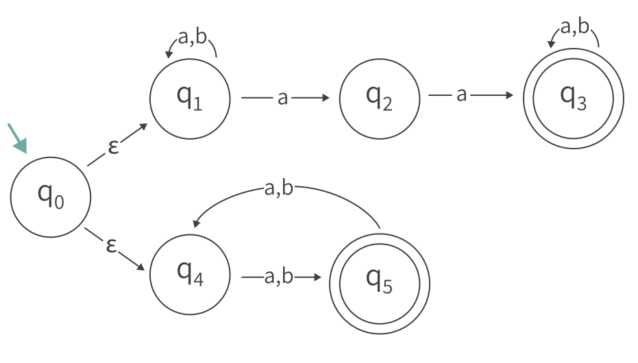

אוטומט סופי לא דטרמניסטי //
תרגילי סיכום
שאלה 1
בנו אוטומט סופי לא דטרמיניסטי (אפשרי עם מעברי אפסילון) עבור שפת המילים מעל הא"ב {a,b} שמכילות את הרצף aa או שהן בגודל אי זוגי.

xשאלה 2
ביחידה הקודמת ראינו שעבור אוטומט סופי דטרמיניסטי כלשהו, אם נהפוך את כל המצבים המקבלים למצבים שאינם מקבלים, ואת כל המצבים שאינם מקבלים למצבים מקבלים, נקבל שהשפה של האוטומט החדש שלנו הוא המשלים של שפת האוטומט המקורי.
א. תכונה זאת לא מתקיימת באוטומט סופי לא דטרמיניסטי.
הסבירו באופן מילולי מדוע התכונה לא מתקיימת, ותנו דוגמא של אוטומט סופי לא דטרמיניסטי שעבורו התכונה לא מתקיימת.
ב. נניח ש- N הוא אוטומט לא דטרמיניסטי. האם יתכן שלמשלים של (L(N לא קיים אוטומט סופי המקבל אותו?
פתרון
א. אם מילה w מתקבלת ע"י אוטומט לא דטרמיניסטי אז ע"פ ההגדרה קיימת קריאה של w באוטומט המגיעה למצב מקבל.
ע"פ הגדרה זאת יתכן שקיים מסלול נוסף המגיע למצב שאינו מקבל.
לכן, במקרה כזה, אם נהפוך את המצבים המקבלים והלא מקבלים - יתקיים שקיימת קריאה של המילה המגיעה למצב מקבל באוטומט החדש, ולכן המילה תהיה בשפה שלה.
נדגים בעזרת האוטומט הבא:
השפה של האוטומט היא
אם נהפוך את המצבים המקבלים והלא מקבלים נקבל את האוטומט הבא:
קל לראות שגם השפה של האוטומט החדש היא
ב. לא יתכן. מכיוון ש- N אוטומט סופי לא דטרמיניסטי אז, ע"פ משפט שראינו, קיים אוטומט סופי דטרמיניסטי D שקול.
כעת, אם נהפוך את המצבים המקבלים והלא מקבלים של D נקבל אוטומט סופי דטרמיניסטי שהשפה שלו היא המשלים של שפת האוטומט N .
שאלה 3
עבור שפה L מעל א"ב Σ ,נגדיר את השפה הבאה:
במילים, (DropOut(L מכילה את כל המחרוזות שמתקבלות על ידי כך שלוקחים מחרוזת מ- L ומוחקים ממנה אות בודדת, במקום כלשהו.
לדוגמא עבור
מתקבל
הוכיחו או הפריכו: אם L רגולרית אז גם (DropOut(L הינה רגולרית
פתרון
תהי L רגולרית.
אז, ע״פ ההגדרה, קיים לה אוטומט סופי דטרמיניסטי
כך ש- L = L(A).
נגדיר אוטומט סופי לא דטרמיניסטי
הרעיון הוא שנאפשר ״דילוג״ על קריאה של אחת מהאותיות (בלבד).
לשם כך, ניצור שני עותקים של האוטומט
ראשית כל, ״נשכפל״ את האוטומט
לכל מצב של
המצבים של האוטומט
נגדיר את פונקציית המעברים באוטומט
ראשית, המעברים יכילו את המעברים המקוריים ב-
- לכל
q∈QA,σ∈Σ Δ(q,σ)={δ(q,σ)}
- לכל
q′∈QA′,σ∈Σ
Δ(q′,σ)={δ(q,σ)′}
ובנוסף, יהיו מעברי אפסילון מכל מצב מקורי למצב ״עוקב״ בשכפול:
- לכל
q∈QA
Δ(q,ε)={p′|∃σ∈Σs.t.p=δ(q,σ)}
מעברי אפסילון אלה מאפשרים את הדילוג על אות אחת.
המצב ההתחלתי יישאר המצב ההתחלתי המקורי:
והמצבים המקבלים יהיו המצבים המקבלים בחלק המשוכפל:
שאלה 4
תהי L שפה רגולרית מעל א״ב
הוכיחו ש -
פתרון
תהי L רגולרית.
אז, ע״פ ההגדרה, קיים לה אוטומט סופי דטרמיניסטי
כך ש- L = L(A)
נגדיר אוטומט סופי לא דטרמיניסטי
עבור
האוטומט N יכיל את המצבים ואת המעברים של האוטומט A המקורי, אך בכל מעבר בין מצב למצב, נוסיף מעברים גם עבור כל שאר האותיות בא"ב.
המצבים המקבלים יישארו כפי שהיו באוטומט A .באופן זה, אם קיים מסלול באוטומט N המגיע למצב מקבל אז בהכרח באוטומט A הייתה מילה באותו גודל שהגיעה למצב מקבל.
נגדיר את N באופן פורמלי:
כעת לפונקציית המעברים
לכל מצב
שאלה 5
תהיינה L1 ו- L2 שפות רגולריות מעל אותו א"ב.
הוכיחו שהשפה הבאה הינה רגולרית:
פתרון
תהיינה
אז, ע"פ הגדרה, קיימים אוטומטים סופיים דטרמיניסטיים,
כך ש-
נבנה אוטומט סופי לא דטרמיניסטי
האוטומט N יהיה דומה לאוטומט מכפלה.
קבוצת המצבים תוגדר כמכפלה הקרטזית של המצבים באוטומטים A ו- B, כך:
המצב ההתחלתי יהיה זוג המצבים ההתחלתיים של האוטומטים A ו- B:
כעת לכל אות
כלומר, נתקדם למצב המתאים באוטומט הראשון, ובאוטומט השני נאפשר ניחוש לכל מצב שהיה ניתן להגיע אליו בקריאת אות אחת כלשהי.
לבסוף נגדיר: